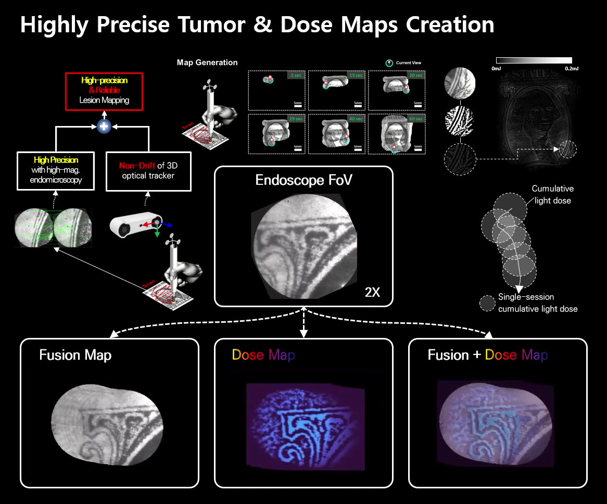

THE ANSUR LAB COLLECTION
Journals.
The ideas, methods, and discoveries behind our research.
2007 — 2026 26 publicationsBrowse the collection
Browse by venueSelect one or more
More venues 15+

Medical robotics Biomedical imaging
Biomedical imagingInternal-Flow-Mediated, Tunable One-dimensional Cassie-to-Wenzel Wetting Transition on Superhydrophobic Microcavity Surfaces during Evaporation
Full citation
Nano Scale Microscale Thermophysical 2019
EyeSLAM: Real‐time Simultaneous Localization and Mapping of Retinal Vessels During Intraocular Microsurgery
Full citation
International Journal of Medical Robotics and Computer Assisted Surgery 2018
Hybrid position/force control of an active handheld micromanipulator for membrane peeling
Full citation
International Journal of Medical Robotics and Computer Assisted Surgery 2016
✦ Best Paper Award
Manipulator Design and Operation For A Six-Degree-Of-Freedom Handheld Tremor-Canceling Microsurgical Instrument
JOURNAL
Full citation
TMECH 2015
Manipulator Design and Operation For A Six-Degree-Of-Freedom Handheld Tremor-Canceling Microsurgical Instrument, Sungwook Yang, Robert A. MacLachlan, Cameron N. Riviere, IEEE/ASME Transactions on Mechatronics, 20(2), pp. 761-772. (Best Paper Award)
✦ Cover Article
Active Locomotion Of A Paddling-Based Capsule Endoscope in an In Vitro and In Vivo Experiment (with videos)
Full citation
No matches just yet.
Try another idea, author, or year.